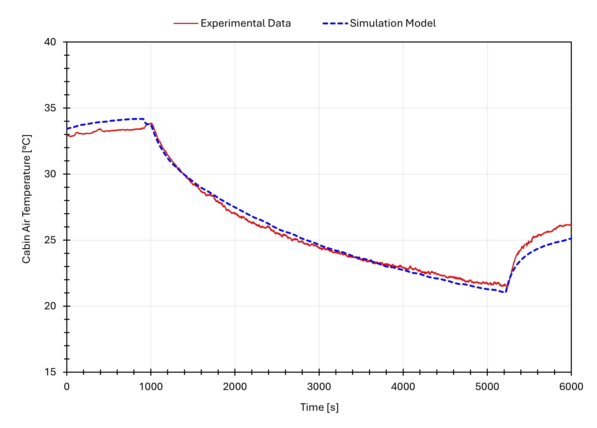

Background
MAHLE developed a compact roof-mounted A/C prototype (Dachklimaanlage) for electric buses — more than 2.5× smaller in footprint than conventional systems. Roof space in electric buses is critical: battery packs, power electronics and hydrogen tanks compete for the same area. A smaller A/C unit directly enables more energy storage capacity.
The prototype had been validated in isolation (lab bench tests). The next step was full-system validation inside a real bus and comparison to the original series unit under identical climate conditions.
Phase 1 – Sensor Installation
I joined the project mid-instrumentation and took over as the previous student intern completed her placement. Over the following weeks I installed and commissioned the full sensor network:
- 30–40 thermocouples inside the cabin (3 height levels × multiple longitudinal zones)
- Temperature and pressure sensors throughout the air distribution ducts
- Temperature, pressure and RPM sensors at every inlet/outlet of the refrigeration cycle (compressor, evaporators, condensers, expansion valves)
- Temperature and pressure sensors on the refrigerant (Kältemittel) circuit
- All 100+ channels consolidated via SCADAS data acquisition hardware and monitored in IMC Studio

Phase 2 – Climate Chamber Tests (Series Unit)
I selected a suitable climate chamber facility (near Bielefeld) through a comparative analysis of providers covering cost, distance, chamber size and technical requirements.
Tests ran over 3–4 days at ambient temperatures of 30–40 °C. Each test cycle: pre-soak overnight → baseline measurement → cooling active for ~30–60 min → cool-down measurement. Multiple compressor speeds and ambient temperatures were tested.

Phase 3 – Prototype Transplant
With 2.5 weeks to replace the series unit with the prototype, I coordinated the full retrofit campaign — which I describe as a surgical transplant across four systems:
- Skeleton: designed and assembled a stainless steel adapter frame to mechanically bridge the prototype (half the size of the original) to the bus roof mounting points
- Airways: devised and hand-built an airtight connection between prototype air outlets and the bus distribution ducts
- Circulatory system: identified the port mismatch between prototype and bus refrigerant lines, specified and ordered custom hoses, coordinated refrigerant drainage and refill with licensed technicians
- Nervous system: wired prototype control signals, re-installed the full sensor network, calibrated all channels in IMC Studio
I also identified and resolved a design oversight in the protective dome mounting — sourcing a budget fix from a local hardware store.


Phase 4 – Numerical Model (Bachelor's Thesis)
Experimental data from both test campaigns was used to build a validated 1D thermodynamic simulation in MAHLE's internal BISS software — a digital twin of the complete cooling system covering three circuits: refrigerant cycle, cabin air loop, and external condenser air loop.
The model could predict system behaviour at varying ambient temperatures, humidity levels and compressor speeds — enabling engineers to test control strategies and identify over-dimensioned components without returning to the climate chamber.
The model predicts cabin air temperature within 2°C of the measured values across all test conditions:

Validation extended to the refrigerant circuit as well. The pressure-enthalpy diagram overlays measured and simulated cycle states across all four key components — condenser, compressor, expansion valve and evaporator — with deviations below 5% at every operating point.

Results
- Prototype demonstrated equivalent cooling performance to the series unit at less than half the roof footprint
- Result validated years of MAHLE prototype development to senior management
- Validated 1D simulation model delivered for ongoing control strategy development
- Retrofit campaign completed on time despite 2.5-week window
Tools & Skills
See next